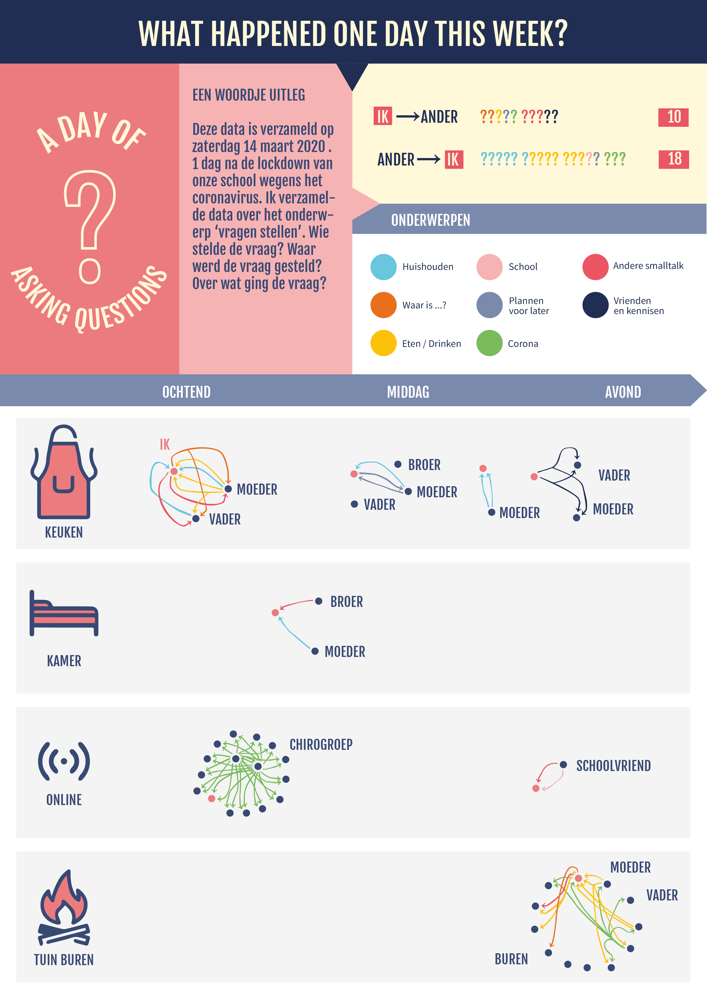

Deze opdracht gaat over het analyseren van data en deze visualiseren. Elke dag komen we heel veel informatie tegen. Ik koos als onderwerp 'vragen'. De data die ik verzamelde toon ik in een infographic en een interactieve webpagina.
 Hier vind je de interactieve webpagina van dit project